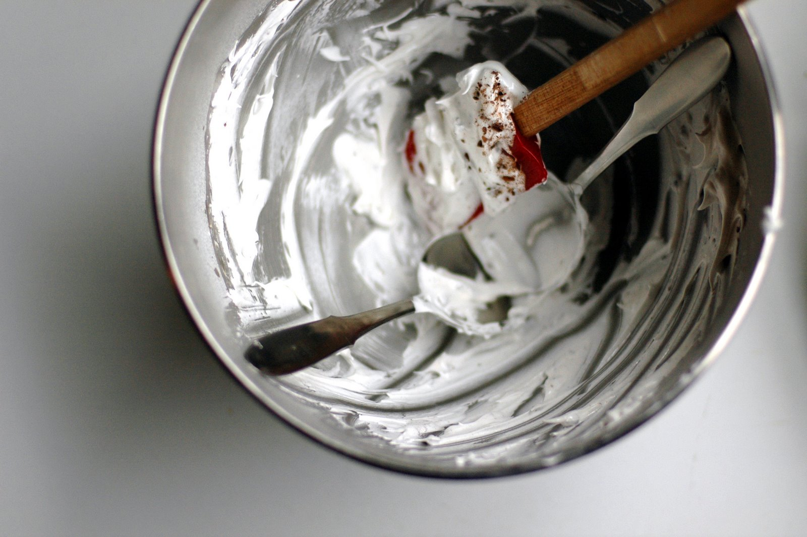

The way a cloud would
Traveling is really, really great. I mean, I know that’s not exactly newsworthy, but bear with me for a minute. I guess what I mean is that, especially since I started working at home, where I spend lots of long hours in concentration and quiet, every time I go away, I feel thirsty somehow – like an old, crusty sponge, waiting to soak up something, anything, a new sight or smell or taste. And it feels so good to drink it all in, the way you’d do with a glass of water, in one enormous gulp, on a humid day. All that drinking in and soaking up, all that traveling, so good.
But then, after a while, coming home is kind of great too, in its own way. At first it feels like a sort of letdown, familiar but uncomfortable, like seeing an old photo of yourself and wondering why, oh why, you ever wore your hair like that. But then you start to notice the nice things. You notice that you actually like your little house, putty-colored living room carpet and all, much better than you thought you did before you left. You notice that dinner tastes better when you eat it from your own plates. And when you turn on the mixer on the kitchen counter, it shakes a little and makes this raspy, metallic whirr-whirrr sound, and somehow, though the same noise used to make you worry that the whole thing was going to explode into dust and shrapnel, now it sounds cheerful, workmanlike, even reassuring.
So I guess what I mean is that traveling is great, because of how it makes you feel about home.

Anyway. The only trouble with coming home is that Seattle doesn’t have Tartine, and San Francisco does. Which means that San Francisco gets to have rochers whenever it wants, and Seattle doesn’t. This is, in some dictionaries, the definition of trouble. Entire revolutions have been started because of shortages in bread – and that, people, was only bread. It’s scary, really, to think of what a lack of cocoa nib meringues might lead to. That’s why I got out the mixer.
{kind=link}
Ever since I got Tartine, the bakery’s cookbook, I’ve been itching to make the rochers. Essentially, they’re just meringue cookies, plain and simple, with either toasted almonds or cocoa nibs stirred into the batter. They’re crisp on the outside, shaped like small, snowy boulders, but inside, they’re light and soft and chewy, like a good marshmallow. They’re very simple, like I said, but they’re also very special, and no matter how many we buy, there are never quite enough. Brandon and I shared the last of our stash on the ride home last Wednesday night, somewhere just outside of Portland, on I-5 North. It was sad. Even sadder was finding a lonely crumb of it wedged into the folds of the passenger seat a couple days later. So I decided, finally, to make some.
I’ve heard mixed things about the Tartine cookbook, but I was unafraid. I whipped up the meringue base, folded in a good dose of nibs – the book calls for almonds, but I winged it – and put them in the oven. They came out okay, if a little brown. (The directions called for the oven to be set to 350 degrees, higher than I’d ever heard of for meringues.) But when I bit into one, it just wasn’t right. It was heavy and dense, and it tasted wrong. It tasted brown, for lack of a better word. Brandon ate a couple of them, or maybe three, because when the man is desperate, he doesn’t give up easily. But the rest eventually went the way of the trash can, and I went out for a pint of cookies ’n cream to cover up my disappointment. (Also, I love cookies ’n cream.)
And then I tried again. I could have gone back to the Tartine recipe and tried it at a lower temperature, but I don’t know; I was sort of holding a grudge. I get this way sometimes. I thought, too, about trying the meringue cookie recipe in this month’s Cook’s Illustrated, but I couldn’t tell if it would be right either. So I pulled out this recipe, which I’ve used before to make a lovely meringue for pavlovas, and I decided to work from there. I scaled it back a bit – I didn’t need that many – and added some nibs, and after a pass through the oven, they looked very, very pretty. Brandon ate one. Then I ate one. They were more delicate and fragile than their prototype, but they were delicious. They were crisp on the outside, just as I wanted, and the inside yielded the way a cloud would, or a down pillow, if clouds and down pillows were edible. It was light and marshmallowy, and it melted the second it hit the tongue. It was a little different from Tartine’s, but in some ways, I liked it even better. So we shared another. And then it was decided: these were keepers.
{kind=link}
At this point, I should tell you that as I was typing the previous paragraph, Brandon (who is sitting on the couch across the room, watching Flight of the Conchords, and was not in any way prompted) said, “I keep thinking about those cocoa nib things. They are SOOOOO good.” So there you go.
Now, all that said, I should warn you that these aren’t really cookies. You could eat them like cookies, yes, and we certainly did, and I even commented to Brandon that they would be very good with hot tea or coffee. But be warned: they will crumble all over your shirt. On the upside, this means that if you don’t brush the crumbs off, and if you walk around like that all day, you’ll have a readily available snack whenever you want it. On the downside, it means that they’re probably better suited to being eaten with a fork. Eaten, say, as cocoa nib pavlovas, with whipped cream and a spoonful of briefly cooked berries. Which isn’t really a downside at all.
{kind=link}
Cocoa Nib Pavlovas
Adapted from this recipe by Shuna Fish Lydon
For room temperature egg whites, take the eggs out of the fridge the night before you need them, or put them in a bowl of warm water for about 10 minutes. And as for the nibs, be sure to buy roasted ones. Raw nibs can taste very, very bitter – not what you want here, to say the least. Brand-wise, I like Scharffen Berger.
I kind of like the thought of these with only whipped cream, but if you want to make a quick berry sauce, it’s easy: just put some fresh or frozen berries in a saucepan. Then cook them briefly to your desired consistency, adding sugar to taste and mashing the fruit lightly, if you like. Cool to room temperature before using.
Lastly, note that the instructions below yield fairly small, dainty pavlovas. If you’d like them to be larger, dollop the meringue onto the baking sheet in larger mounds, about 6 to 10 in all. Total baking time will be 40 minutes to 1 hour.
1 teaspoon pure vanilla extract
1 Tbsp. cornstarch
1 cup granulated sugar
½ cup egg whites (from 3 to 4 large eggs), preferably at room temperature
¼ teaspoon cream of tartar
Pinch of salt
½ cup cocoa nibs (see above)
To serve:
Unsweetened whipped cream
Berry sauce, preferably strawberry or raspberry (optional; see above)
Set oven racks in the upper and lower thirds of the oven, and preheat to 275° F. Line two baking sheets with parchment paper or silicone liners. Pour the vanilla into a small cup. Whisk the cornstarch into the sugar in a small bowl.
In the bowl of a heavy-duty mixer fitted with the whisk attachment, whip the egg whites, cream of tartar, and salt, starting on low and increasing the speed incrementally to medium. Beat until the mixture holds soft peaks and the egg white bubbles are very small and uniform, about 2 to 3 minutes.
Increase the speed to medium-high, and gradually, slowly, add the sugar and cornstarch. Continue to beat until glossy, stiff peaks form when the whisk is lifted, about 4 minutes. The mixture should be very thick. In the final moments of beating, add the vanilla. Remove the bowl from the mixer stand, and quickly, gently, fold in the cocoa nibs.
Immediately spoon the meringue by heaping tablespoonfuls onto the baking sheets. I find that it’s easiest to do this with two tablespoons – the kind you eat with, not the measuring kind. Scoop up a good dollop of the meringue on one spoon; then use the second spoon to nudge the meringue out of the first spoon and onto the pan. You should be able to fit about 10 or 11, nicely spaced, on each sheet pan. With the back of a spoon, make an indentation in the middle of each mound.
Place the baking sheets in the oven. Reduce the temperature to 250° F. Bake for about 30 minutes, rotating and switching the baking sheets halfway through, until the meringues are crisp, dry to the touch on the outside, and white – or, at most, pale gold around the edges. If, when you open the oven to rotate them, they appear to be cracking or taking on too much color, reduce the temperature by 25 degrees.
When the meringues are ready, remove them from the oven and cool on the pan on a wire rack for at least 20 minutes, or until completely cool.
Serve dolloped with whipped cream and, if you like, berry sauce. Or they’re perfectly good plain, as a delicate cookie of sorts.
Note: Pavlovas should keep in a tightly sealed container, or individually wrapped, at room temperature for up to a week, provided that the room is not humid. But I like them best on the first day.
Yield: 20-22 small pavlovas, serving 8 to 12